回覧板一覧 受信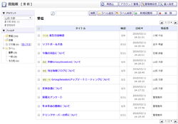
回覧板一覧 送信済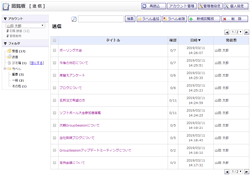
回覧板一覧 ゴミ箱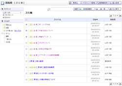
新規作成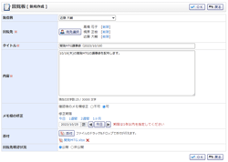
回覧先選択
受信確認
受信確認（ゴミ箱）
送信状況確認
送信状況確認（ゴミ箱）
回覧板基本設定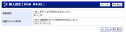
詳細検索
個人設定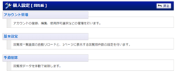
回覧板自動削除設定（個人）
回覧板自動削除設定確認（個人）
回覧板手動削除（個人）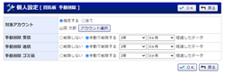
回覧板手動削除確認（個人）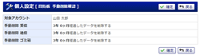
回覧板初期値設定（個人）
回覧板初期値設定確認（個人）
管理者設定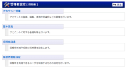
回覧板自動削除設定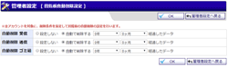
回覧板自動削除設定確認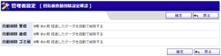
回覧板手動削除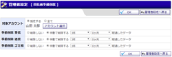
回覧板手動削除確認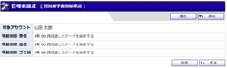
回覧板初期値設定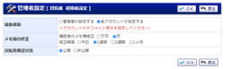
回覧板初期値設定確認
ショートメール通知設定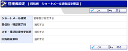
ショートメール通知設定確認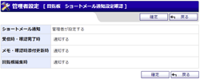
回覧板発信者制限設定
回覧板発信者制限設定確認
統計情報
回覧板アカウントマネージャー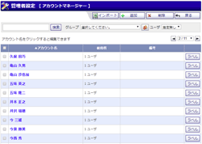
回覧板アカウント登録(基本設定)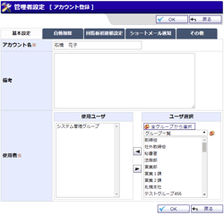
回覧板アカウント登録(自動削除)
回覧板アカウント登録(回覧板初期値設定)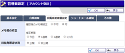
回覧板アカウント登録(ショートメール通知)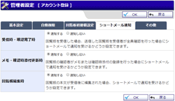
回覧板アカウント登録(その他)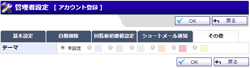
回覧板アカウント登録(基本設定)（個人）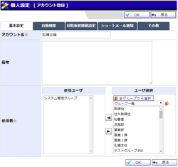
回覧板アカウント登録(自動削除)（個人）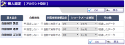
回覧板アカウント登録(回覧板初期値設定)（個人）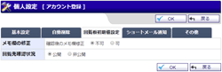
回覧板アカウント登録(ショートメール通知)（個人）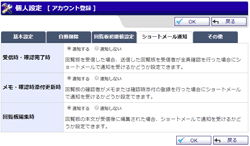
回覧板アカウント登録(その他)（個人）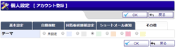
回覧板アカウントインポート
回覧板アカウントインポート確認
回覧板アカウント管理(個人)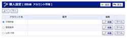
回覧板基本設定
回覧板基本設定確認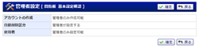
回覧板ラベルの管理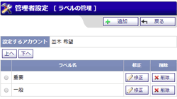
回覧板ラベルの管理(個人)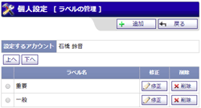
回覧板ラベル登録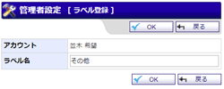
回覧板ラベル登録(個人)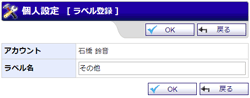
回覧板ラベル登録確認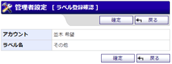
回覧板ラベル登録確認(個人)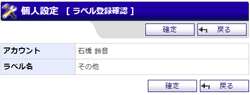